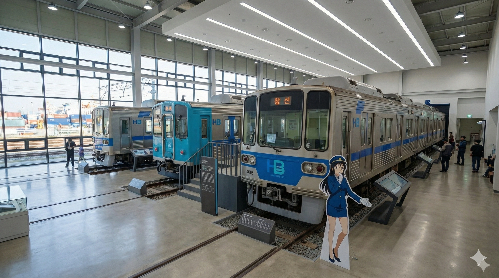
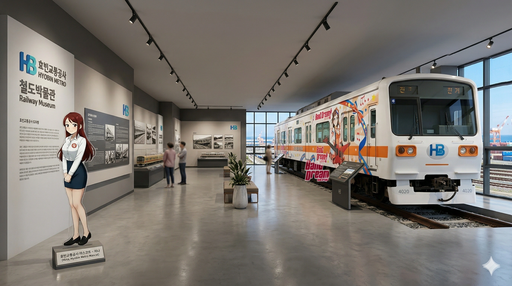
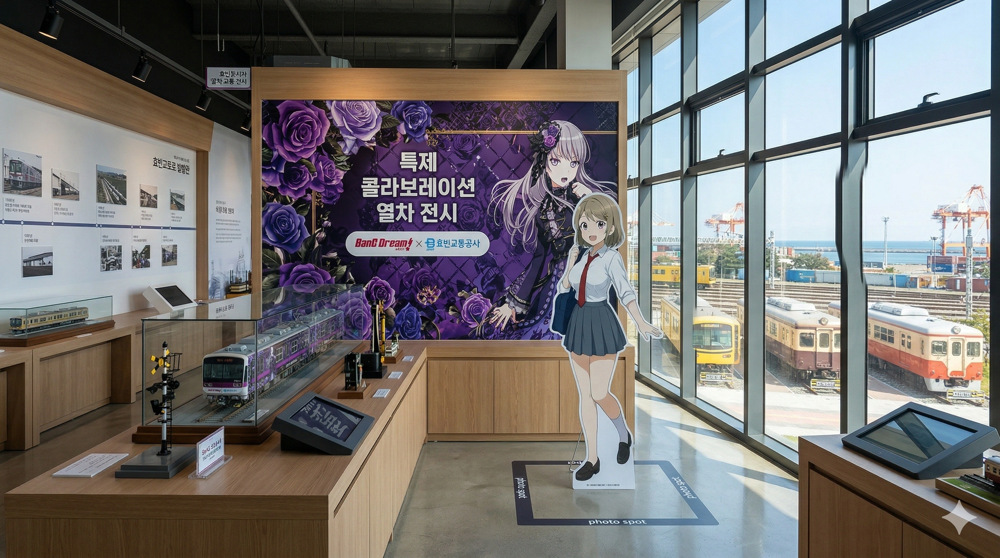
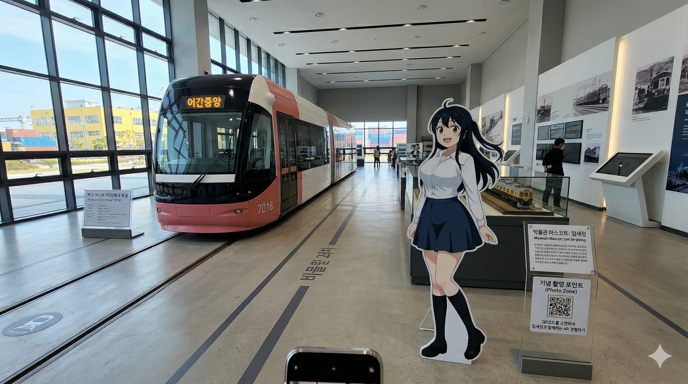
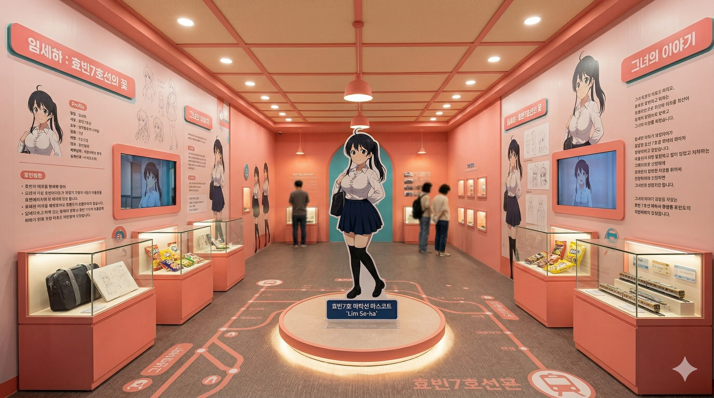
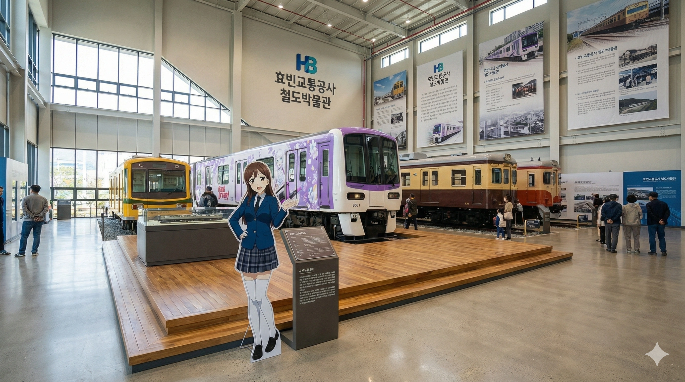
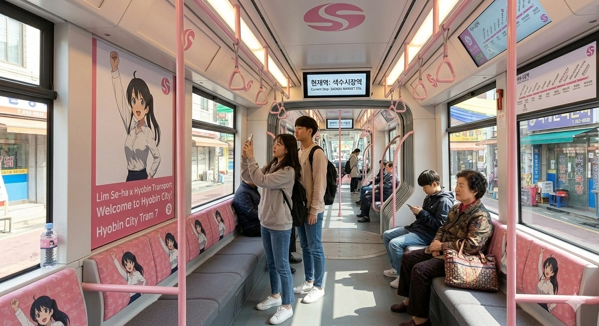

1. 개요
"지방교통공사가 짬 내서 만든 동네 박물관이라고 무시했다간 지갑과 영혼이 동시에 털리는 곳."
"어린이를 위한 건전한 교육 시설의 탈을 쓴, 어른이(철덕·오타쿠)들의 진정한 에덴동산."
"시장님, 박물관 굿즈 수익이 3호선 연간 운임 수익을 넘어섰는데요?" "계속 진행해."
효빈광역시 창전구 팔조동에 똬리를 틀고 있는 효빈교통공사 직영 철도 박물관. 본래 팔조차량사업소 문서의 한 귀퉁이에 곁다리로 소개되어 있었으나, 2023년 박효빈 시장 취임 이후 스튜디오 효빈의 짐승 같은 자본력과 서브컬처 미디어 믹스 스케일이 걷잡을 수 없이 폭주하면서 문서 분량이 폭발, 결국 아예 독립된 문서로 분리되었다.
전국 지방교통공사 중 유일무이하게 정식 '철도 박물관' 타이틀을 단 독립 시설이다. 부산교통공사의 4호선 안평기지 간이 홍보관이나 타 지자체의 옹색한 역사 내 짜투리 전시 공간 따위와는 감히 비교조차 불허하는 매머드급 스케일을 자랑한다. 철덕(철도 동호인)들이 보면 거품을 물고 쓰러질 만한 정밀 철도 모형과 차량 하부 구동계(대차) 절개 모델, 그리고 실제 구동 가능한 마스콘(운전대) 시뮬레이터 체험 공간은 이곳에선 그저 '애피타이저'에 불과하다.
이곳의 진면목이자 무서운 점은, 전통적인 철도 시설과 전 세계 서브컬처 팬덤을 무자비하게 긁어모으는 레일루미네 IP가 끔찍할 정도로 완벽하게 융합되어 있다는 점이다. 겉으로는 공기업의 근엄한 전시 시설인 척 위장하고 있지만, 매표소를 지나는 순간 뱅드림!과 러브라이브! 공식 콜라보 랩핑 열차가 시야를 강타하며, 각 노선 마스코트들의 광기 어린 서사가 담긴 거대한 세트장이 관람객의 이성을 마비시킨다. 연간 250만 명의 관광객을 쓸어 담으며 효빈시 1년 복지 예산의 상당 부분을 혼자서 캐리하는 창전구의 합법적 돈복사기로 군림하고 있다.
2. 설립 배경 및 코레일(KORAIL)과의 밀월 관계
2016년 효빈교통공사 출범과 함께 팔조기지 내 구석탱이 유휴 부지를 활용하여 처음 문을 열었다. 초창기엔 흔해 빠진 사진판 몇 개 걸어놓은 노잼 박물관이었으나, 이 박물관이 지금의 '덕력 10,000%' 스케일을 갖추게 된 결정적 계기는 현 효빈교통공사 사장인 정시원의 공이 99.9%를 차지한다.
정시원 사장은 과거 한국철도공사(KORAIL) 효빈본부장을 역임했던 인물로, 뼛속 깊이 새겨진 철덕이자 덕업일치를 이룬 광인이다. 그는 코레일에서 효빈교통공사 사장으로 적을 옮기기 직전, 코레일 소속의 귀중한 퇴역 차량들(구형 무궁화호 객차, 비둘기호, 심지어 의왕 철도박물관에 가야 할 귀중한 증기기관차까지!)을 "효빈시에 올바른 철도 문화를 뿌리내리겠다"는 명목하에 무조건적으로 기증(이라 쓰고 합법적 긴빠이라 읽는다)해버리는 기행을 저질렀다.[2]코레일 본사 자산관리팀이 뒤늦게 알고 "야 내 증기기관차 내놔 미친놈아!"라며 길길이 날뛰었으나, 정시원이 이미 야밤에 효빈시 소유로 등기 이전을 마친 뒤였다. 이 사건은 코레일 내부에서 '팔조동 야간도주 사건'으로 불린다.
게다가 코레일 소속의 빈효선 광역전철 마스코트인 전노아의 모든 IP 사용권과 굿즈 독점 판매권마저 서류 조작(?)에 가까운 수완으로 이 박물관에 때려 박았다. 그 덕분에 명색이 '효빈교통공사' 관할 박물관임에도 불구하고, 박물관 1층 메인 홀 한복판에는 코레일의 역사가 듬뿍 담긴 파란색 CI와 구형 승차권 발매기, 그리고 한국철도의 상징들이 너무나 당당하고 자연스럽게 전시되어 있다. 이쯤 되면 효빈교통공사가 코레일을 적대적 M&A 한 게 아닌가 의심스러울 정도다.
3. 전시관 안내 (오타쿠 도축장)
3.1. 제1전시관: 효빈 철도 100년사 (실내)
박물관 1층 우측에 위치한 정통 철도 역사관. 1930년대 노면전차 시절부터 현재의 징그러울 정도로 거대한 광역철도망에 이르기까지 효빈 대중교통의 발전사와 흑역사를 여과 없이 까발리는 공간이다.
- 오다구 룸 (The Origin): 효빈 철도 모에화의 아버지이자 선구자, 오다구(吳多口) 전 사장이 2000년대 초반 결재 올렸던 '철도 캐릭터화 전면 도입 기획서' 원본 서류가 온도와 습도가 조절되는 방탄유리 안에 전시되어 있다. 문서 하단 결재란에는 당시 박현만 전 시장이 즉석에서 승인하며 빨간 펜으로 갈겨쓴 전설의 명언 "철도는 남자의 로망이지. 당장 진행하게."가 국보 1호급 유물처럼 박제되어 있다.
- 윤대환 암흑기 특별전 (충공깽 전시관): 서브컬처를 사회악으로 규정하고 극도로 탄압했던 윤대환 전 시장 시절, 강제로 소각장에 버려질 뻔했다가 효빈교통공사 직원들이 야밤에 트럭으로 빼돌린 1세대 고나미, 하루빈 입간판들이 '상처 입은 문화 유물' 컨셉으로 처량하게 전시되어 있다. 그 옆에는 당시 수십억을 들여 만들었으나 끔찍한 퀄리티로 시민들의 안구를 테러했던 '돈불라' 갈매기 마스코트가 모자이크 처리된 채 조리돌림 당하고 있다.[3]전시관 설명 팻말에 당당하게 '효빈시 역사상 최악의 시각적 테러이자 씻을 수 없는 문화적 재앙'이라고 공식적으로 명시되어 있다. 시 산하 공기업이 전직 시장을 이렇게 노골적이고 집요하게 묻어버리는 곳은 전 세계에 여기뿐일 것이다.
- 초대형 구동 디오라마 '미니어처 효빈': 무려 200평 규모의 H0 스케일(1:87) 철도 디오라마. 1호선부터 8호선, 트램 7호선과 빈효선까지 모든 열차가 실제 효빈시 지하철 시각표에 1초의 오차도 없이 맞춰 정밀하게 구동된다. 관제석에 앉으면 1호선 마스코트 고나미의 AI 홀로그램이 눈앞에 나타나 "지적확인 환호응답!"을 외치며 조작을 돕는다.
- 운전 시뮬레이터 (PTS) 체험실: 3호선 열차 폐차 시 실제 운전대(마스콘)와 계기판을 통째로 뜯어다 만든 4D 시뮬레이터. 어린이는 물론이고 진짜 기차를 몰아보고 싶어 안달 난 어른이(철덕)들이 3시간씩 줄을 서서 죽치고 앉아 있는 마의 구간이다. 팔조역에 정위치(±5cm 오차 이내) 정차를 완벽하게 해내면 박라미 명예 기관사 수료증(한정판 홀로그램 코스터)을 증정한다.
3.2. 제2전시관: 야외 열차 보존 구역
차량기지 인입선과 맞닿아 있는 드넓은 야외 전시장. 대한민국 철도 역사의 산증인들과 함께, 무시무시한 덕력과 자본주의가 묻어나는 '랩핑 특별 보존 차량'들이 햇빛을 받으며 위풍당당하게 도열해 있다.
- 1호선 초저항 1세대 전동차 (1984년산): 효빈 1호선 개통 당시 투입되었던 최초의 전동차. 차내에는 당시 사용하던 주황색 마그네틱 종이 승차권 개찰구와 에어컨 대신 천장에 매달려 덜덜거리며 돌아가던 낡은 선풍기가 완벽하게 복원되어 있다. 노인 관람객들의 향수를 자극하는 일등 공신.
- 3호선 1세대 GTO 전동차 (초도기형): 출발할 때마다 고막을 찢는 우렁찬 '우우웅~' 구동음으로 유명했던 3호선의 명물. 이 차량은 퇴역 후 단순 보존에 그치지 않고, 뱅드림!의 Morfonica(모르포니카) 공식 랩핑이 된 채로 영구 보존 중이다. 차량 내부 VIP석에는 야시오 루이(八潮 瑠唯)의 실물 크기 1:1 스태추가 바이올린을 켜는 고고한 포즈로 세워져 있다.[4]루이의 생일(11월 19일)에는 특별 야간 개장을 실시하며, 차내 스피커를 통해 모니카의 'Daylight' 바이올린 솔로 파트가 밤새도록 은은하게 흘러나오는 기적의 팬 서비스가 제공된다. 이날은 전국에서 몰려든 뱅드리머들로 팔조동 일대 교통이 마비된다.
- 1930년대 구형 효빈전차 (목조 객차): 7호선의 전신인 노면전차의 목조 객차 완벽 복원품. 내부는 1930년대 경성 모던 보이 감성의 팝업 스토어 '특실 다과'로 마개조되어, 레트로 제복을 차려입은 임세정, 임세하 자매의 등신대가 가배(커피)와 양과자를 판다.
- 2호선 '하루빈 테마' 퇴역차량 (수면 휴게실): 2호선 초기형 쵸퍼제어 차량을 통째로 뜯어고쳐 만든 에어컨 빵빵한 시민 휴게실. "합법적 월급루팡 벙커"라는 하루빈의 게으른 컨셉에 맞게, 좌석 곳곳에 푹신한 카카오프렌즈 목베개와 담요가 널브러져 있으며, CCTV 사각지대에는 대놓고 '꿀잠 존'이 마련되어 있다. 넓은 박물관을 걷다 지친 학부모들과 굿즈런에 실패한 덕후들의 훌륭한 안식처다.
3.3. 제3전시관: 레일루미네 유니버스 & 글로벌 콜라보 홀 (메인)
이 박물관의 진정한 메인 디쉬이자, 전국의 오타쿠들을 효빈시로 강제 집결시켜 지갑을 도륙 내는 악마의 구역. 스튜디오 효빈이 갈아 넣은 자본력으로 11인의 캐릭터별 전용 테마관이 거대한 실내 스튜디오처럼 조성되어 있다. 애니메이션 공식 콜라보는 물론 랩핑 열차의 실물 앞부분을 잘라다 놓은 전시, 캐릭터의 밈(Meme)과 광기 어린 서사를 담은 실물 소품까지 완벽하게 구현되어 있어 발을 들이는 순간 시간 감각이 사라진다.









기타 제3전시관 미친 볼거리
- F학점 성적표 박제관 (3호선 박라미 & 7호선 임세하): 엽월대 박라미(통계학 F)와 효빈대 임세하(기계공학 F)가 신형 모터 구동음 녹음하겠다고 전공 필수 수업을 쨌다가 교수에게 날아온 실제 'F학점 성적 증명서 원본'이 금장 액자에 담겨 전시되어 있다. 대학생 관람객들이 그 앞에서 묵념을 하거나, 수능 샤프를 공물로 바치고 가는 사이비 종교적 기행이 끊이지 않는다.[5]공사 측의 공식 답변에 따르면 이 성적표는 '캐릭터 설정 상의 복제 소품'이라고 둘러대지만, 종이의 재질과 대학 총장의 직인이 너무나 리얼해서 진짜 학생의 성적표를 긴빠이 쳐온 게 아니냐는 심각한 논란이 학사지원과에서 제기된 바 있다.
- 팩트폭격 예산 바인더 (5호선 미소하): 애니메이션 《철도부!》 2쿨 오피스물 파트에서 미소하가 무능한 임원들의 명치를 물리적으로 박살 낼 때 썼던 두께 10cm, 무게 4kg짜리 흉기 '빨간 바인더' 레플리카. 바인더를 직접 열어보면 효빈시 사회복지정책 예산 누수율 데이터와 살벌한 다중회귀분석표가 쏟아져 나와 문과생들을 공포에 떨게 만든다.
- 덕주 1호선 하극상 팝업관: 핑크 마스코트 이덕희(CV.신도 아마네, 라인컬러: #FF4F91)가 창전선 심세이(CV.페이튼 나오미, 라인컬러: #33AAFF)를 향해 "세이 언니 핡!!"을 외치며 추격전을 벌이는 성우 나이 역전 하극상 팝업 영상이 초대형 스크린에서 24시간 무한 재생된다. 덕주 시민들은 부끄러워 고개를 들지 못한다.
- 색상/도색 밈 (Color Meme) 콜라보 섹션: 효빈 도시철도의 노선 색상이 기적적으로 뱅드림 캐릭터들의 이미지 컬러와 일치하여 탄생한 우주의 섭리. 1호선(파랑)=타에, 2호선(초록)=모카, 3호선(노랑)=사아야, 4호선(주황)=카스미, 5호선(빨강)=란, 6호선(보라)=유키나, 7호선(분홍)=아논, 빈효선(연청)=마시로 등의 공식 라이선스 매칭 일러스트가 벽면을 가득 채우고 있다. 스튜디오 효빈과 부시로드의 자본력이 정면 충돌하는 웅장한 곳이다.
3.4. 제4전시관: 롤링스톡 인테리어 홀 (열차 내부 체험관)
박물관 지하 1층 전체를 통째로 파내어 조성된 광기의 열차 내부 체험관. 단순한 플라스틱 모형이 아니라, 실제 폐차 직전의 객차를 가져다 내부를 각 노선의 정체성과 캐릭터들의 테마에 맞춰 뼛속까지 완벽하게 리모델링(마개조)한 미친 공간이다. 의자에 직접 앉아 도시락을 까먹을 수도 있고, 창문 밖으로는 초대형 16K 마이크로 LED 스크린을 통해 각 노선의 주행 풍경이 60fps로 재생되어 멀미가 날 정도의 롤러코스터급 몰입감을 선사한다.





4. 박물관 관련 깽판 및 사건 사고 (Incidents)
효빈교통공사 박물관이 전국 오타쿠들의 성지로 부상하여 돈을 갈퀴로 쓸어 담자, 이 눈부신 문화적 번영을 꼴사납게 여긴 외부 혐오 세력과 무개념 정치인들의 테러가 끊이지 않았다. 하지만 효빈시는 그 어떤 테러에도 무관용 원칙(금융치료)과 오타쿠들의 강력한 물리적 방어전으로 완벽한 피의 응징을 가했다.
- 윤대환 잔당의 '돈불라' 락카 테러 사건 (금융치료 완료):
서브컬처 말살 정책을 폈던 윤대환 전 시장의 극우 성향 잔당들이 박물관 야외 전시장에 야밤에 철조망을 뚫고 난입했다. 이들은 보존 중인 1호선 1세대 열차 외벽에 빨간 락카로 흉측한 '돈불라(과거 실패한 갈매기 마스코트)'를 그리며 깽판을 쳤다.
▶ 결과: 당시 박물관 한정판 굿즈 오픈런을 위해 텐트를 치고 밤을 새우던 300명의 분노한 럽폭도(러브라이브 팬덤)와 뱅드리머들에게 현장에서 포착되었다. 격노한 오타쿠들이 양손에 킹블레이드(LED 야광봉)를 들고 스파르타 팔랑크스 진형으로 포위하여 물리적으로 제압(이라 쓰고 린치라 읽는다)해 버렸다. 효빈시청은 이들에게 문화재 훼손 혐의로 5억 원의 민사 소송과 손해배상 청구서를 날려 3대째 빚을 갚도록 파산시켜 버렸다.[6]재판 과정에서 이 바보들이 테러에 쓴 락카 스프레이를 박물관 굿즈샵 미술코너에서 본인 명의 신용카드로 포인트까지 적립하며 정가 결제했다는 사실이 밝혀져 판사마저 어이를 상실하고 피식 웃었다. - 보수 의원 우신면의 "F학점 전시관 철거" 요구 농성:
지역구 보수 성향 의원인 우신면(8호선 백지화를 주도했던 바로 그 양반)이 제3전시관의 'F학점 성적표 박제관'을 시찰하고는 "이딴 불건전한 전시물은 청년들의 학업 실패를 조장하고 상아탑의 권위를 실추시킨다!"라며 꽹과리를 치며 철거 농성을 벌였다.
▶ 결과: 빡친 효빈대와 엽월대 총학생회가 즉각 연합하여 우 의원이 차명으로 소유한 상가 건물 불매운동을 시작했다. 게다가 우 의원의 상가 지하에 불법 성매매 마사지 업소가 버젓이 영업 중이라는 사실을 대학생 해커들이 털어버리는 바람에, 우 의원은 3일 만에 농성을 접고 대국민 도게자 사과 기자회견을 열어야 했다. - 한국철도공사(KORAIL)의 빈효선 자산 무력 압류 시도:
정시원 사장이 코레일 효빈본부장 시절 효빈교통공사에 서류 조작으로 넘긴 '전노아' 굿즈 판매권과 퇴역 증기기관차를 뺏기 위해 코레일 본사 자산관리팀 행동대장들이 박물관에 들이닥쳤다.
▶ 결과: 정시원 사장이 이들을 박물관 지하실(VIP 라운지)로 질질 끌고 가 효빈시 특산 폭탄주(참이슬 8 + 고량주 2 비율)를 12잔 연속으로 원샷 먹여 떡실신 시켰다. 이성적 판단이 불가능해진 코레일 간부들은 취중에 '해당 자산을 효빈교통공사에 영구 무상 임대하며, 이의 제기 시 코레일 사장이 효빈역 광장에서 탭댄스를 춘다'는 각서에 지장을 찍고 다음 날 끔찍한 숙취와 함께 대전 본사로 쫓겨났다. - HAF '25: 5천 명의 대이동과 정문 셔터 붕괴 사건:
2025년 효빈 애니메이션 페스티벌(HAF) 마지막 날, 스튜디오 효빈 공식 트위터에 기습적으로 '야시오 루이 1/7 스케일 흑기사 한정판 피규어' 500개를 박물관 특별점에 푼다는 미친 공지가 올라왔다.
▶ 결과: 공지가 올라간 지 단 10분 만에 HAF 행사장(효빈종합운동장)에 있던 5천 명의 뱅드리머들이 일제히 3호선 팔조역을 향해 좀비 떼처럼 엑소더스(대이동)를 시작했다. 팔조역 승강장이 인파로 짓눌려 스크린도어가 휘어질 뻔했고, 박물관 정문 대형 철제 셔터가 오타쿠들의 밀기(Push) 압력을 견디지 못하고 활처럼 휘어지다 폭음과 함께 뜯겨 나가는 대참사가 발생했다. 박효빈 시장은 보고를 받고 분노하기는커녕 "저 짐승 같은 구매력이 바로 살아있는 효빈의 경제다!"라며 셔터 수리비를 시비로 전액 쏴줬다.
5. 숨겨진 마굴: 박물관 특수 굿즈샵 & 부대시설
효빈교통공사 굿즈샵 문서에는 이 박물관 매장이 기재되어 있지 않다. 왜냐하면 이곳은 박물관 입장료(2,000원)를 지불하고 개찰구를 통과해야만 들어갈 수 있는 유료 구역 내부의 '숨겨진 마굴'이기 때문이다. 겉보기엔 그저 박물관 출구에 달린 작은 기념품 코너 같지만, 실제 규모는 고송동 효빈교통공사 본사에 위치한 '굿즈샵 본점'에 완벽히 필적하는 매머드급 스토어이며, 오직 여기서만 구할 수 있는 특수 한정판 굿즈가 즐비하다.
5.1. HB GOODS 박물관 특별 한정판 매장
| 굿즈명 | 상세 내용 |
|---|---|
| 팔조(八潮)역 역명판 아크릴 스탠드 | 입고되자마자 뱅드리머(특히 루이 맘들)들이 쓸어 담아 매일 아침 좀비 사태급 오픈런이 발생하는 환상의 아이템. 가격은 무려 45,000원이지만 암시장에서 3배 가격에 거래되자 정시원 사장이 빡쳐서 공장 라인을 풀가동 중이다. |
| 박라미 F학점 삭제 찰지우개 | 종이 손상 없이 지긋지긋한 흑연만 쏙 지워내는 쫀쫀한 떡지우개 (2,000원). 팔조기지 아이돌 박라미의 학점 빵꾸 피눈물이 서려 있어, 시험 기간만 되면 대학생들에게 부적처럼 미친 듯이 팔려나간다. |
| 스케일 피규어 & 네소베리 컬렉션 | 고송동 본점이나 시내 매장엔 입고 즉시 품절된 전 캐릭터 1/7 스케일 피규어(각 75,900원)와 유리아의 몽키스패너 장착 네소베리(12,000원) 재고가 오직 이곳 박물관 특별점 창고에만 산더미처럼 쌓여있다. 입장료 2,000원이 아깝지 않은 이유. |
5.2. 박물관 내 CU & GS25 편의점 (교통카드 전쟁터)
박물관 1층 로비 양끝에는 일반적인 전시 시설과 달리 CU와 GS25가 나란히 입점해 있다. 이 편의점들이 특별한 이유는 바로 오직 이곳에서만 판매하는 '박물관 한정판 레일루미네 홀로그램 효빈교통카드(캐시비/티머니)' 때문이다. 캐릭터 11인의 작화가 화려한 홀로그램으로 인쇄되어 있으며, 가격은 장당 8,000원. 카드가 입고되는 화요일 새벽 6시만 되면 편의점 알바생들은 매대에 돌진하는 오타쿠들의 웨이브를 막아내야 하는 전쟁을 치른다.
5.3. 효빈교통공사 식당차 (콜라보 푸드 코트)
박물관 지하 1층에는 단순한 매점을 넘어선 거대한 콜라보 식당가(푸드 코트)가 존재한다. 각 캐릭터의 컨셉에 미친 듯이 집착한 메뉴 라인업을 자랑한다.
| 메뉴명 | 상세 내용 |
|---|---|
| 미소하의 5호선 용암 떡볶이 (9,500원) | 예산 폭격기 미소하의 매운맛을 물리적으로 구현한 위장 점막 파괴 메뉴. 캡사이신 원액이 듬뿍 들어가 엽떡 오리지널 따위는 가볍게 씹어먹는다. 먹다 울면 직원이 휴지 대신 효빈시의 어두운 예산 삭감 통계 자료를 건네준다. |
| 고나미의 FM 정통 수제 돈까스 (11,000원) | 돈까스의 크기(가로 15cm, 세로 10cm)와 두께, 튀김옷의 빵가루 입자 수까지 효빈교통공사 사규집에 명시된 규격에 1mm라도 어긋나면 주방장이 전량 폐기한다는 광기의 돈까스. 맛은 기가 막히게 좋다. |
| 임세정·임세하 자매의 7호선 마카롱 (6,500원) | 7호선 무가선 트램의 모양을 정밀하게 본떠 구워낸 핑크색 마카롱 3피스 세트. 안에 들어있는 크림 필링이 너무 달아서, 한입 베어 물면 세하처럼 기계공학 F를 맞을 것 같은 달콤한 착각에 빠진다. |
| 전노아의 코레일 블루 소다 (4,000원) | 한국철도공사의 상징적인 쨍한 파란색(코레일 블루)을 띠는 청량한 블루 레모네이드. 전노아 특전 코스터가 함께 제공된다. 이거 마시고 코레일에 취업하겠다는 고시생들이 즐겨 찾는다. |
6. 여담 (TMI)
박물관을 둘러싼 믿거나 말거나 한 10가지의 흥미진진한(?) 비하인드 스토리와 광기 어린 뒷얘기들이다. 나무위키 스타일의 깊은 고증과 압도적인 텍스트 분량을 담아 전면 재작성하였다. 각주 툴팁에 마우스를 올려 확인해보자.
-
박물관 부지 선정 당시, 창전구청장의 열렬한 환영과 세수 대박
박물관 건립 초기, 지역 주민 공청회에서 "우리 동네에 이런 씹덕 시설이 들어오면 도시 이미지가 망가진다"며 일부 보수 주민들이 거세게 반발했으나, 당시 창전구청장은 구청 세수 보고서를 받자마자 눈이 돌아가 책상을 내리치며 "이거 완전 개꿀인데?! 당장 허가 도장 찍어!"라며 전광석화처럼 사업을 승인했다. 이후 구청의 재정 자립도가 수직 상승하며 구청장의 은인이 되었다.[7]실제로 박물관 개장 첫 달, 구청 세수에 무려 30억 원의 지방세가 꽂히자 구청장은 다음 날 박라미 가발을 쓰고 사아야 앞치마를 두른 채 구청 로비에서 개관 축하 떡을 직접 돌렸다. 현재는 선거 유세 때마다 박물관 앞에서 오타쿠들에게 90도 인사를 박으며 "내가 이 성지를 유치한 사람이다"라며 무료 입장권을 나눠준다. 자본주의와 서브컬처의 결합이 만들어낸 완벽한 지방자치의 승리라 할 수 있다. -
제3전시관 하루빈 등신대 위치 이동 미스터리 괴담
제3전시관 하루빈 테마 코너에 세워진 실물 크기 등신대를 두고 야간 경비원들 사이에서 기괴한 미스터리 소문이 매년 끊이지 않고 접수되고 있다. 밤마다 등신대의 위치가 미세하게 움직인다는 목격담이 이어져 공포 분위기를 조성했다.[8]CCTV 판독 결과, 밤 12시가 넘어가면 하루빈 등신대의 위치가 미세하게 2호선 퇴역 전동차 출입문 방향으로 5cm씩 이동해 있다는 실화 괴담이다. 기겁한 경비 반장이 무당을 불러 굿을 하려 했으나, 과학수사대(?)가 출동해 밝혀낸 진상은 바로 옆 팔조기지 인입선을 지나는 심야 화물열차의 진동 때문에 바닥 마찰력으로 등신대가 스르륵 미끄러진 것이었다. 물론 관리팀은 공식적으로 "하루빈이 야근하기 싫어서 퇴근길 문을 열고 탈출하려는 강한 의지"라며 위치 고정을 거부하고 있다. -
야외 전시장 3호선 모르포니카 차량 내부의 숨겨진 이스터에그
야외에 영구 보존된 3호선 GTO 전동차(모르포니카 랩핑 차량) 내부에는 야시오 루이의 스태추 외에도 제작진이 작정하고 숨겨놓은 광기 어린 장난감이 하나 존재한다. 이스터에그를 찾기 위한 관람객들의 발길이 끊이지 않는 핫플레이스다.[9]차량 맨 뒷칸 휠체어석 하단 구석을 후래시로 비춰보면, 뱅드림에 등장하는 츄츄(CHu²/타마데 치유)의 미니 피규어가 'Excellent!' 팻말을 들고 거꾸로 매달려 있는 오타쿠적 이스터에그가 발견된다. 발견 확률은 1% 미만이며, 이를 찾아내 인증사진을 찍어 안내데스크에 보여주면 특별 제작된 '철덕 생수'를 상품으로 준다. 이 때문에 라이벌 밴드인 RAS(레이즈 어 스이렌) 팬들이 츄츄 피규어를 떼어가려고 툭하면 십자드라이버를 들고 박물관에 잠복하다 보안요원에게 연행되는 소동이 벌어진다. -
다로나 열차 내부(제4전시관) 경보기 발동 조건과 실제 참사
제4전시관 내부에 재현된 4호선 다로나 테마 객실에 탑승할 때는 관람객들이 사소한 소음조차 주의해야 하는 은근한 압박이 존재한다. 조금만 떠들어도 시스템이 즉각 반응하여 관람객들을 긴장시킨다.[10]객실 내부에 고성능 AI 데시벨 측정기가 천장 환풍구 속에 은밀하게 장착되어 있어, 내부 소음이 85dB을 초과하면 천장 스피커에서 다로나 성우가 직접 핏대를 세워 녹음한 120dB짜리 고막 테러용 호루라기 소리와 함께 "거기 떠드는 사람! 질서 유지하세요!!"라는 불호령이 터져 나온다. 실제로 만취한 진상 아저씨가 객실 의자에 누워 코를 대단하게 골다가 호루라기 폭탄 3연타를 맞고 기절해 119 구급차에 실려 간 전설적인 사건이 기사화되기도 했다. -
1호선 고나미관 청소 상태와 덕후들의 바닥 취침 기행
박물관 내 다른 구역과 달리 1호선 고나미 테마관은 공사 임직원들도 감탄할 정도로 종교적인 수준의 칼각과 청결함을 유지하고 있다. 관리팀의 지독한 결벽증이 만들어낸 기적의 공간이다.[11]고나미의 엄격한 'FM 규정' 설정에 단단히 세뇌당한 박물관 관리팀장이 하루에 4번씩 의료용 알코올 솜과 극세사 걸레로 열차 바닥을 파리가 미끄러지도록 박박 닦기 때문이다. 바닥에 머리카락 한 올이라도 떨어져 있으면 해당 구역 청소 용역업체 소속 직원이 시말서를 써야 한다는 엄포가 내려져 있어, 오죽하면 오타쿠들이 "여기 바닥은 대형 병원 수술실보다 깨끗해서 바닥에 떨어진 삼각김밥을 주워 먹어도 배탈이 안 난다"며 바닥에 대(大)자로 누워 자는 광기 어린 기행을 인증샷으로 남기고 있다. -
박효빈 시장의 은밀한 굿즈샵 VVIP 오픈런과 암묵적 국룰
효빈시의 수장이자 최고 권력자인 박효빈 시장은 공식 석상에서는 점잖은 척하지만, 알고 보면 이 박물관 굿즈샵의 숨겨진 거대 큰손이다. 한정판이 풀리는 날이면 어김없이 목격된다.[12]시장 비서실장의 피셜에 따르면, 전 세계에 50개만 한정 풀리는 '타카마츠 토모리 굿즈'나 희귀 아크릴 스탠드가 박물관 특별점에 입고되는 날이면, 시장이 몰래 연차를 쓰고 얼굴을 가리는 후드티를 뒤집어쓴 채 새벽부터 편의점 앞 오픈런 줄에 당당히 합류한다고 한다. 당연히 맨 앞줄에 서 있는 덕후들은 시장님인 줄 다 알면서도, "시장님이 여기서 잡히면 우리 한정판 굿즈 예산이 짤릴지도 모른다"는 공포감에 서로 입을 틀어막고 모른 척 눈감아주는 암묵적인 국룰(조폭보다 엄격한 룰)이 작용하고 있다. -
전노아 코레일 특별관 앞의 기괴한 소주병 공물 사태와 전용 수거함
코레일 자산을 무단 긴파이 쳐서 만든 빈효선 전노아 테마관 앞은 매일 아침 진풍경이 벌어진다. 팬들이 바치는 기괴한 공물들 때문에 박물관 측이 두 손 두 발 다 들었다.[13]전노아가 사내에서 가끔 소주를 찾거나 폭탄주를 말아먹는다는 2차 창작 밈이 팬들 사이에서 공식처럼 굳어지면서, 전국에서 몰려든 철덕들과 럽라이버들이 전노아 등신대 앞에 참이슬 후레쉬 빈 병과 숙취해소제 상쾌환을 사당에 제사 지내듯 몰래 헌화하고 도망가는 사태가 벌어졌다. 청소 아주머니들이 매일 아침 소주병 분리수거를 하느라 격노하자, 박물관 측이 아예 항복 선언을 하고 전노아 등신대 옆에 '소주잔 모양의 전용 재활용 분리수거함'을 설치해 주는 대인배적(?) 면모를 보였다. -
라세나 열차 내부(제6호선 테마관)의 수험생 수면 난민촌 지정
제6호선 라세나 테마 객실에 발을 들인 관람객들은 이상하게도 밀려오는 졸음을 참지 못하고 꾸벅꾸벅 조게 된다. 독서실을 제쳐두고 이곳을 찾는 학생들이 급증했다.[14]박물관 설계 당시 건축가가 의도한 것인지, 이 구역만 조명 조도를 일반 전시실의 3분의 1 수준으로 낮춰놓았고 차내 스피커에서는 로젤리아의 감성적인 발라드 곡들이 오르골 무반주 버전으로 24시간 은은하게 흘러나온다. 이 때문에 극심한 불면증에 시달리는 현대인들이나, 수능을 앞둔 근처 효빈고등학교 고3 학생들이 독서실 책상을 박차고 나와 이 객실 벨벳 시트에 누워 시체처럼 쿨쿨 자고 있는 모습이 흔히 목격된다. 박물관 측이 '1인당 연속 수면 30분 제한'이라는 안내 경고문을 붙였으나, 이미 수험생들에게 이곳은 독서실 지정석이나 다름없어 무시당하고 있다. -
제3전시관 미소하 예산 바인더 옆의 위험한 협박 계산기
미소하의 10cm 빨간 예산 바인더 전시물 옆에는 장식용으로 낡은 전자 계산기가 하나 덩그러니 놓여 있는데, 관람객들이 장난삼아 이 계산기를 누르다가 심장이 내려앉는 경험을 한다.[15]계산기의 아무 숫자나 누르고 '=' 버튼을 누르면, 기계음이 아니라 미소하의 목소리로 "당신의 횡령 정황이 포착되었습니다", "예산 전액 삭감!", "지금 당장 세무조사 들어갑니다!"라는 서늘한 경고 음성이 박물관 전체 스피커로 울려 퍼지도록 프로그래밍되어 있다. 시찰을 나온 창전구의원들이 아무 생각 없이 버튼을 누르다 진짜 본인의 비자금 횡령 트라우마가 발동해 비명을 지르며 도망친 적이 있다. 요즘엔 초등학생들이 이 계산기로 테스코 비트박스 리믹스를 연주하며 놀고 있다. -
본사 사옥을 압도하는 박물관 유지보수 예산과 노조 파업 위기
효빈교통공사 내부 회계 감사 보고서에 따르면, 공사 본사 사장실 및 임원실 집기 교체 비용보다 이 팔조기지 철도박물관의 유지보수 및 굿즈 관리 예산이 무려 3배 이상 높게 책정되어 있다.[16]정시원 사장이 취임 직후 결재판에 내리꽂은 "덕질에는 단 1원도 아끼면 안 된다"는 사규 제1조 철칙 덕분이다. 실제로 본사 사무실 에어컨은 10년 넘은 구형이라 여름마다 직원들이 땀을 흘리는데, 박물관 내부는 연중무휴 18도 항온항습 시스템이 칼같이 가동되며 최고급 공기청정기가 돌아간다. 이 때문에 공사 본사 직원들이 "사장실보다 박물관 화장실이 훨씬 쾌적하다"며 차라리 박물관 야간 경비원이나 미화원으로 좌천시켜 달라고 노조 파업 직전까지 갔던 웃지 못할 해묵은 전적이 존재한다.
각주
- [1] 협력이라고 쓰고 '정시원 사장의 합법적 강탈'이라고 읽는다. 코레일 측에서는 이를 갈고 있으나, 효빈시의 어마어마한 예산 융단폭격과 특산 폭탄주에 번번이 무너지고 있다.
- [2] 코레일 본사 자산관리팀이 뒤늦게 알고 "야 내 증기기관차 내놔 미친놈아!"라며 길길이 날뛰었으나, 정시원이 이미 야밤에 효빈시 소유로 등기 이전을 마친 뒤였다. 이 사건은 코레일 내부에서 '팔조동 야간도주 사건'으로 불린다.
- [3] 전시관 설명 팻말에 당당하게 '효빈시 역사상 최악의 시각적 테러이자 씻을 수 없는 문화적 재앙'이라고 공식적으로 명시되어 있다. 시 산하 공기업이 전직 시장을 이렇게 노골적이고 집요하게 묻어버리는 곳은 전 세계에 여기뿐일 것이다.
- [4] 루이의 생일(11월 19일)에는 특별 야간 개장을 실시하며, 차내 스피커를 통해 모니카의 'Daylight' 바이올린 솔로 파트가 밤새도록 은은하게 흘러나오는 기적의 팬 서비스가 제공된다. 이날은 전국에서 몰려든 뱅드리머들로 팔조동 일대 교통이 마비된다.
- [5] 공사 측의 공식 답변에 따르면 이 성적표는 '캐릭터 설정 상의 복제 소품'이라고 둘러대지만, 종이의 재질과 대학 총장의 직인이 너무나 리얼해서 진짜 학생의 성적표를 긴빠이 쳐온 게 아니냐는 심각한 논란이 학사지원과에서 제기된 바 있다.
- [6] 재판 과정에서 이 바보들이 테러에 쓴 락카 스프레이를 박물관 굿즈샵 미술코너에서 본인 명의 신용카드로 포인트까지 적립하며 정가 결제했다는 사실이 밝혀져 판사마저 어이를 상실하고 피식 웃었다.
- [7] 실제로 박물관 개장 첫 달, 구청 세수에 무려 30억 원의 지방세가 꽂히자 구청장은 다음 날 박라미 가발을 쓰고 사아야 앞치마를 두른 채 구청 로비에서 개관 축하 떡을 직접 돌렸다. 현재는 선거 유세 때마다 박물관 앞에서 오타쿠들에게 90도 인사를 박으며 "내가 이 성지를 유치한 사람이다"라며 무료 입장권을 나눠준다. 자본주의와 서브컬처의 결합이 만들어낸 완벽한 지방자치의 승리라 할 수 있다.
- [8] CCTV 판독 결과, 밤 12시가 넘어가면 하루빈 등신대의 위치가 미세하게 2호선 퇴역 전동차 출입문 방향으로 5cm씩 이동해 있다는 실화 괴담이다. 기겁한 경비 반장이 무당을 불러 굿을 하려 했으나, 과학수사대(?)가 출동해 밝혀낸 진상은 바로 옆 팔조기지 인입선을 지나는 심야 화물열차의 진동 때문에 바닥 마찰력으로 등신대가 스르륵 미끄러진 것이었다. 물론 관리팀은 공식적으로 "하루빈이 야근하기 싫어서 퇴근길 문을 열고 탈출하려는 강한 의지"라며 위치 고정을 거부하고 있다.
- [9] 차량 맨 뒷칸 휠체어석 하단 구석을 후래시로 비춰보면, 뱅드림에 등장하는 츄츄(CHu²/타마데 치유)의 미니 피규어가 'Excellent!' 팻말을 들고 거꾸로 매달려 있는 오타쿠적 이스터에그가 발견된다. 발견 확률은 1% 미만이며, 이를 찾아내 인증사진을 찍어 안내데스크에 보여주면 특별 제작된 '철덕 생수'를 상품으로 준다. 이 때문에 라이벌 밴드인 RAS(레이즈 어 스이렌) 팬들이 츄츄 피규어를 떼어가려고 툭하면 십자드라이버를 들고 박물관에 잠복하다 보안요원에게 연행되는 소동이 벌어진다.
- [10] 객실 내부에 고성능 AI 데시벨 측정기가 천장 환풍구 속에 은밀하게 장착되어 있어, 내부 소음이 85dB을 초과하면 천장 스피커에서 다로나 성우가 직접 핏대를 세워 녹음한 120dB짜리 고막 테러용 호루라기 소리와 함께 "거기 떠드는 사람! 질서 유지하세요!!"라는 불호령이 터져 나온다. 실제로 만취한 진상 아저씨가 객실 의자에 누워 코를 대단하게 골다가 호루라기 폭탄 3연타를 맞고 기절해 119 구급차에 실려 간 전설적인 사건이 기사화되기도 했다.
- [11] 고나미의 엄격한 'FM 규정' 설정에 단단히 세뇌당한 박물관 관리팀장이 하루에 4번씩 의료용 알코올 솜과 극세사 걸레로 열차 바닥을 파리가 미끄러지도록 박박 닦기 때문이다. 바닥에 머리카락 한 올이라도 떨어져 있으면 해당 구역 청소 용역업체 소속 직원이 시말서를 써야 한다는 엄포가 내려져 있어, 오죽하면 오타쿠들이 "여기 바닥은 대형 병원 수술실보다 깨끗해서 바닥에 떨어진 삼각김밥을 주워 먹어도 배탈이 안 난다"며 바닥에 대(大)자로 누워 자는 광기 어린 기행을 인증샷으로 남기고 있다.
- [12] 시장 비서실장의 피셜에 따르면, 전 세계에 50개만 한정 풀리는 '타카마츠 토모리 굿즈'나 희귀 아크릴 스탠드가 박물관 특별점에 입고되는 날이면, 시장이 몰래 연차를 쓰고 얼굴을 가리는 후드티를 뒤집어쓴 채 새벽부터 편의점 앞 오픈런 줄에 당당히 합류한다고 한다. 당연히 맨 앞줄에 서 있는 덕후들은 시장님인 줄 다 알면서도, "시장님이 여기서 잡히면 우리 한정판 굿즈 예산이 짤릴지도 모른다"는 공포감에 서로 입을 틀어막고 모른 척 눈감아주는 암묵적인 국룰(조폭보다 엄격한 룰)이 작용하고 있다.
- [13] 전노아가 사내에서 가끔 소주를 찾거나 폭탄주를 말아먹는다는 2차 창작 밈이 팬들 사이에서 공식처럼 굳어지면서, 전국에서 몰려든 철덕들과 럽라이버들이 전노아 등신대 앞에 참이슬 후레쉬 빈 병과 숙취해소제 상쾌환을 사당에 제사 지내듯 몰래 헌화하고 도망가는 사태가 벌어졌다. 청소 아주머니들이 매일 아침 소주병 분리수거를 하느라 격노하자, 박물관 측이 아예 항복 선언을 하고 전노아 등신대 옆에 '소주잔 모양의 전용 재활용 분리수거함'을 설치해 주는 대인배적(?) 면모를 보였다.
- [14] 박물관 설계 당시 건축가가 의도한 것인지, 이 구역만 조명 조도를 일반 전시실의 3분의 1 수준으로 낮춰놓았고 차내 스피커에서는 로젤리아의 감성적인 발라드 곡들이 오르골 무반주 버전으로 24시간 은은하게 흘러나온다. 이 때문에 극심한 불면증에 시달리는 현대인들이나, 수능을 앞둔 근처 효빈고등학교 고3 학생들이 독서실 책상을 박차고 나와 이 객실 벨벳 시트에 누워 시체처럼 쿨쿨 자고 있는 모습이 흔히 목격된다. 박물관 측이 '1인당 연속 수면 30분 제한'이라는 안내 경고문을 붙였으나, 이미 수험생들에게 이곳은 독서실 지정석이나 다름없어 무시당하고 있다.
- [15] 계산기의 아무 숫자나 누르고 '=' 버튼을 누르면, 기계음이 아니라 미소하의 목소리로 "당신의 횡령 정황이 포착되었습니다", "예산 전액 삭감!", "지금 당장 세무조사 들어갑니다!"라는 서늘한 경고 음성이 박물관 전체 스피커로 울려 퍼지도록 프로그래밍되어 있다. 시찰을 나온 창전구의원들이 아무 생각 없이 버튼을 누르다 진짜 본인의 비자금 횡령 트라우마가 발동해 비명을 지르며 도망친 적이 있다. 요즘엔 초등학생들이 이 계산기로 테스코 비트박스 리믹스를 연주하며 놀고 있다.
- [16] 정시원 사장이 취임 직후 결재판에 내리꽂은 "덕질에는 단 1원도 아끼면 안 된다"는 사규 제1조 철칙 덕분이다. 실제로 본사 사무실 에어컨은 10년 넘은 구형이라 여름마다 직원들이 땀을 흘리는데, 박물관 내부는 연중무휴 18도 항온항습 시스템이 칼같이 가동되며 최고급 공기청정기가 돌아간다. 이 때문에 공사 본사 직원들이 "사장실보다 박물관 화장실이 훨씬 쾌적하다"며 차라리 박물관 야간 경비원이나 미화원으로 좌천시켜 달라고 노조 파업 직전까지 갔던 웃지 못할 해묵은 전적이 존재한다.